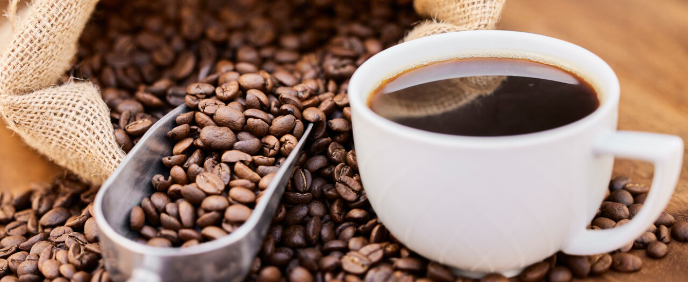

El Cafe
El café mexicano tiene una rica historia y es conocido por su calidad y variedad única en todo el mundo. México es uno de los mayores productores de café y es especialmente famoso por sus cafés de altura, cultivados en las montañas del país. La geografía variada de México, que incluye regiones montañosas con ricos suelos volcánicos y un clima ideal, contribuye a la producción de granos de café de alta calidad con sabores distintivos.
Algunas de las principales regiones productoras de café en México incluyen Chiapas, Veracruz, Puebla, Oaxaca, Nayarit, Guerrero y Jalisco. Cada región produce café con características únicas debido a sus diferencias en altitud, clima y suelo.
Sostenibilidad y Comercio Justo
México es también un líder en la producción de café orgánico y en prácticas de comercio justo. Muchos productores de café mexicano trabajan en cooperativas que se enfocan en la sostenibilidad ambiental, el mejoramiento de las condiciones de vida de los agricultores y la producción orgánica. Estas prácticas no solo benefician a los productores locales y al medio ambiente, sino que también aseguran un producto de alta calidad para el consumidor.
Café de Especialidad
El interés en el café de especialidad ha crecido en México, tanto en la producción como en el consumo. Los caficultores están experimentando con diferentes métodos de procesamiento, como lavado, natural y honey, para crear perfiles de sabor únicos y mejorar la calidad del café. Esto ha llevado a una mayor apreciación de los cafés mexicanos de especialidad en el mercado internacional y ha fomentado una cultura del café más rica dentro del país.